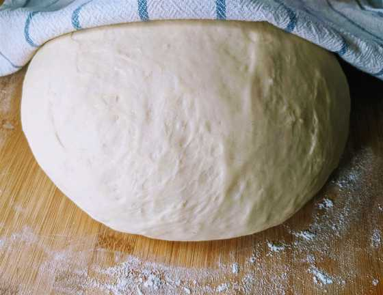
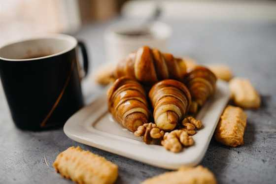
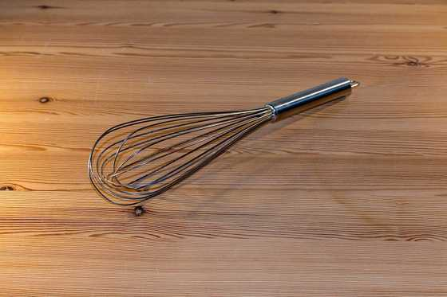
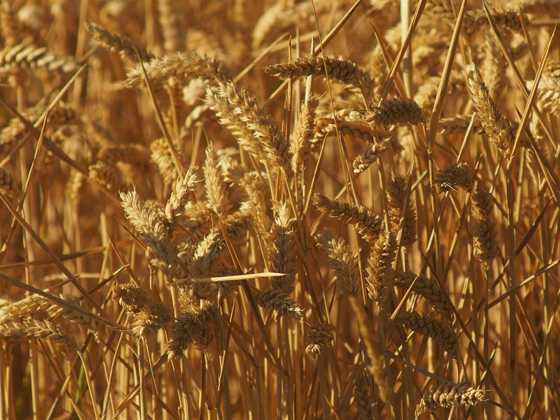
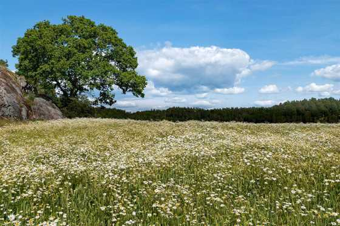

口コミ(イメージ例)
以下は制作側が作成したイメージ例で、実在のお客様の声ではありません。
イメージ例
朝早くから開いているので、通勤前にバゲットを買って帰ります。香ばしさが違います。
イメージ例
食パンがしっとりしていて、家族みんなで毎日食べています。近所にあって助かります。
イメージ例
イートインで焼きたてのパンをいただきました。ゆったりできて、また来たくなる雰囲気です。
お店の由来と想い

店名の「エレパント」は、ゾウ(エレファント)に由来すると報じられています。ゾウのように、一歩ずつ着実に歩み、地域に愛されるお店になりたい、という店主の願いが込められています。店の目印もゾウの看板です。
店主の辻岡伸也さんは、フランスに本店を置くベーカリーや東京の人気店など、約18年のパン職人経験を持ちます。草津は人口が増え、子育て世帯が多いことから出店を決めたそうです。
当初は惣菜系のパンを中心に考えていたものの、近所の方からハード系パンの要望を受け、その品ぞろえを広げたと紹介されています。
出典:びわ湖大津経済新聞(2026年3月)ほか。



アクセス・店舗情報
- 住所
- 〒525-0028 滋賀県草津市上笠2丁目10-5
- 電話
- 準備中
- 営業時間
- 準備中(報道では7:00〜17:00・売り切れ次第終了。変更の可能性あり)
- 定休日
- 準備中(報道では火曜・水曜。変更の可能性あり)
- @elepant_bakery
